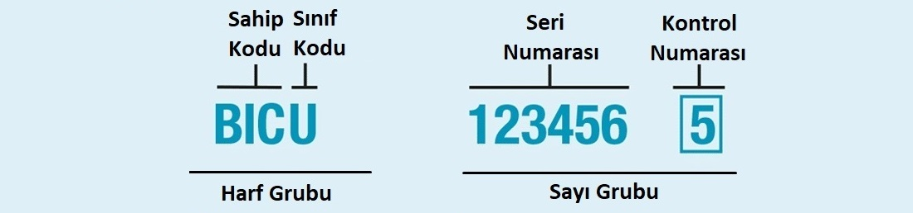
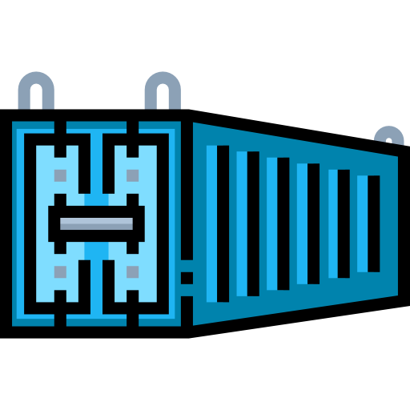

Konteyner Kontrol Numarası Nedir ?
Konteyner kontrol numarası, uluslararası taşımacılıkta kullanılan bir tanımlama numarasıdır ve genellikle "Container Number" olarak da adlandırılır. Bu numara, bir konteynerin benzersiz kimliğini belirtir ve izlenmesini sağlar.
Konteyner kontrol numarası genellikle aşağıdaki unsurlardan oluşur:
1) Ülke Kodu: Konteynerin kayıtlı olduğu ülkenin kısa formunu belirten iki harfli bir kod (ISO 3166 standardına göre).
2) Seri Numarası: 6 rakamdan oluşan benzersiz bir seri numarası.
3) Konteyner Tipi Tanımlayıcısı: Konteynerin tipini belirten bir karakter (örneğin, "U" standart konteynerler için).
Konteyner Kontrol Numarası Neden Gereklidir ?
1)Benzersiz Tanımlama: Her konteynerin benzersiz bir kontrol numarası olması, konteynerin kimliğini belirleyerek takip edilmesini sağlar. Bu, taşımacılık sürecinde konteynerin doğru yönlendirilmesi, izlenmesi ve kontrol edilmesi için kritik öneme sahiptir.
2)Güvenlik ve İzlenebilirlik: Konteyner kontrol numarası, güvenlik kontrolleri ve risk yönetimi için kullanılır. Uluslararası taşımacılıkta, konteynerlerin güvenliği büyük önem taşır ve her bir konteynerin tanımlanabilir olması, güvenlik tehditlerinin azaltılmasına yardımcı olur.
3)Dokümantasyon ve Yönetim: Konteyner kontrol numarası, taşıma belgeleri ve işlemleri üzerinde tutarlılık ve doğruluk sağlar. Taşımacılık ve lojistik şirketleri, konteynerlerin taşıma belgelerinde ve dijital sistemlerde bu numarayı kullanarak işlemleri yönetirler.
4)Hızlı ve Verimli İşleyiş: Konteyner kontrol numarası, taşıma süreçlerini daha hızlı ve daha verimli hale getirir. Liman işlemleri, gümrük işlemleri ve depolama süreçleri gibi lojistik operasyonlarda konteynerin doğru ve hızlı bir şekilde tanımlanması, iş akışını iyileştirir.
5)Uluslararası Standartlar: Konteyner kontrol numarası, uluslararası standartlar (ISO 6346) tarafından belirlenmiş bir formata sahiptir. Bu standartlar, tüm dünya genelindeki limanlar, taşıma şirketleri ve gümrük otoriteleri tarafından tanınır ve kullanılır.